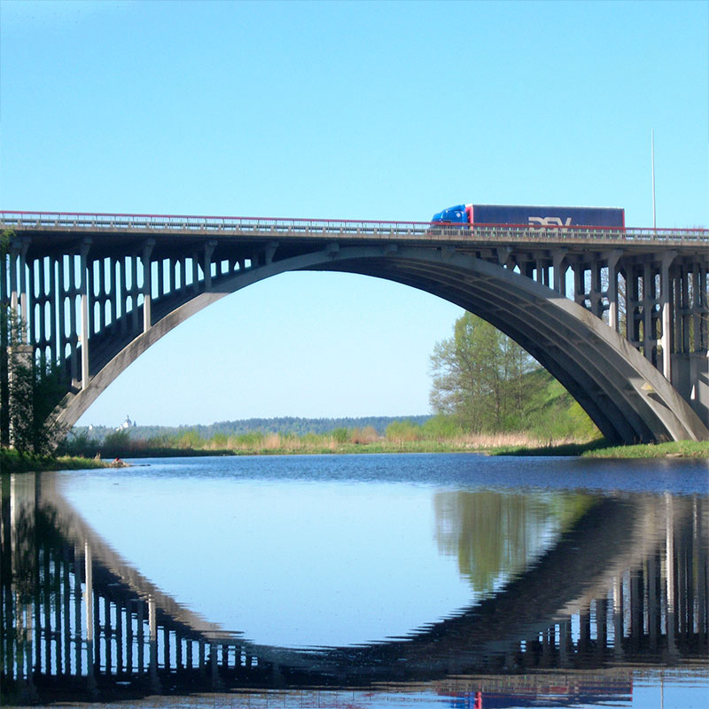
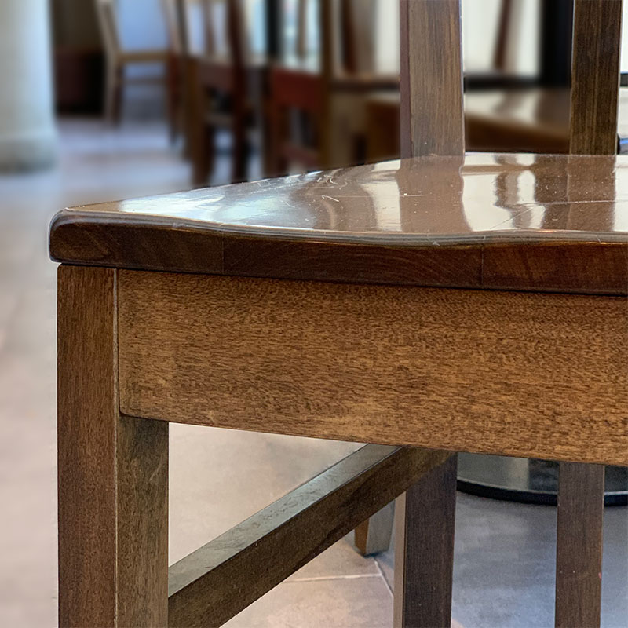
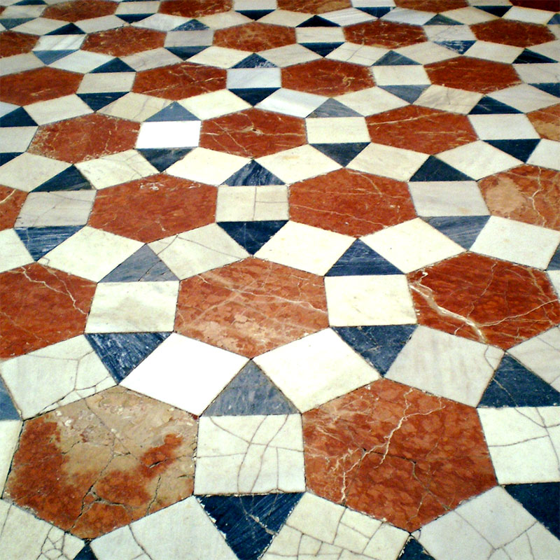
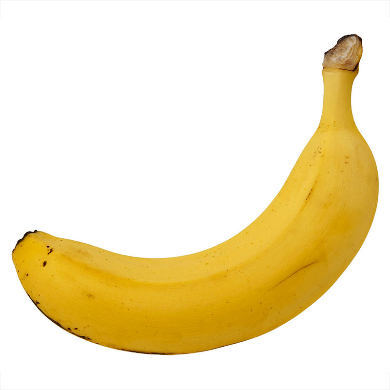

Numbers that represent something else.
For example: the numbers in a clock represent amounts of time (minutes, hours).
The largest number you can find.
Something from nature with a very geometrical shape.
A flower, plant, fruit, vegetable, rock, etc.
A very geometrical construction.
A building, sculpture, bridge, arch, doorway, window or other things built by humans.

A piece of art that uses interesting geometric shapes.
A group of things too large to be counted.
A thing whose shape is made of flat surfaces and hard edges, with no curves.
A thing whose shape is made only of curved surfaces
Something you imagine required very precise measurements or complex calculations to build.
Circles inside other circles.
As many squares or rectangles as you can fit in the same picture.
The polygon with the largest amount of sides you can find.
A polygon is a flat closed shape whose sides are all straight lines.
An imperfect circle.
Something that is almost perfectly circular, but not quite.
A hidden triangle.
A triangle formed by edges of things or in the space between things and that is only visible from a particular position and direction.

A design made by placing geometric shapes one next to the other, with no gaps.
For example geometric floor or wall tiles.

Things or shapes arranged in a colorful and symmetrical design.
Similar to a kaleidoscope, a geometrical flower or the wings of a butterfly.
A group of things whose color, size or shape follows a repeating pattern.
A group of similar things that apparently are randomly distributed, following no pattern.
A group of similar things, ordered by size.
An object that would be a very fast and exciting slide if you could shrink your body.
